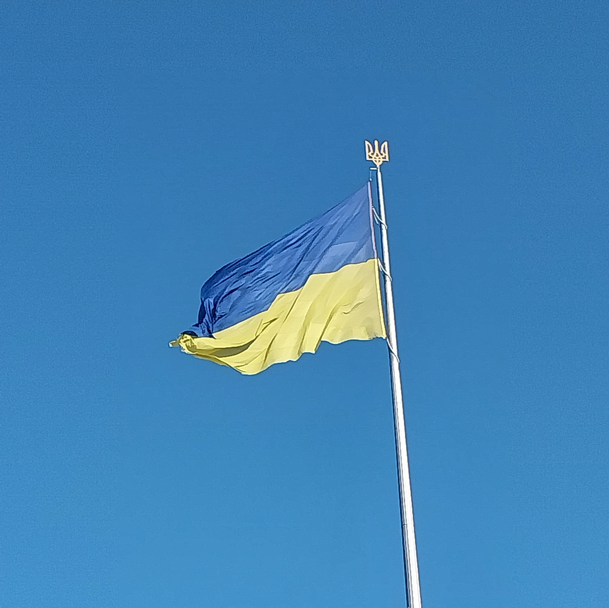

Ukraine, été 2023 Lors de l'été 2023, j'ai voyagé en Ukraine en guerre. Cela a été un voyage marquant sur beaucoup de plans, et je voulais partager mon experience. Il y a pour l'instant trois articles : Le trajet Lviv Kyiv 